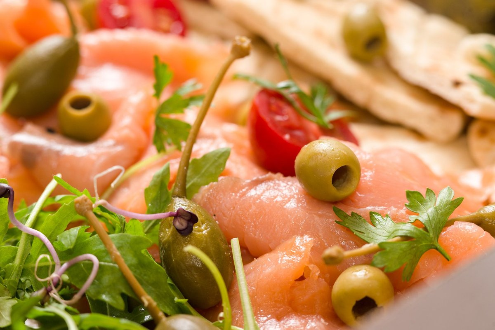
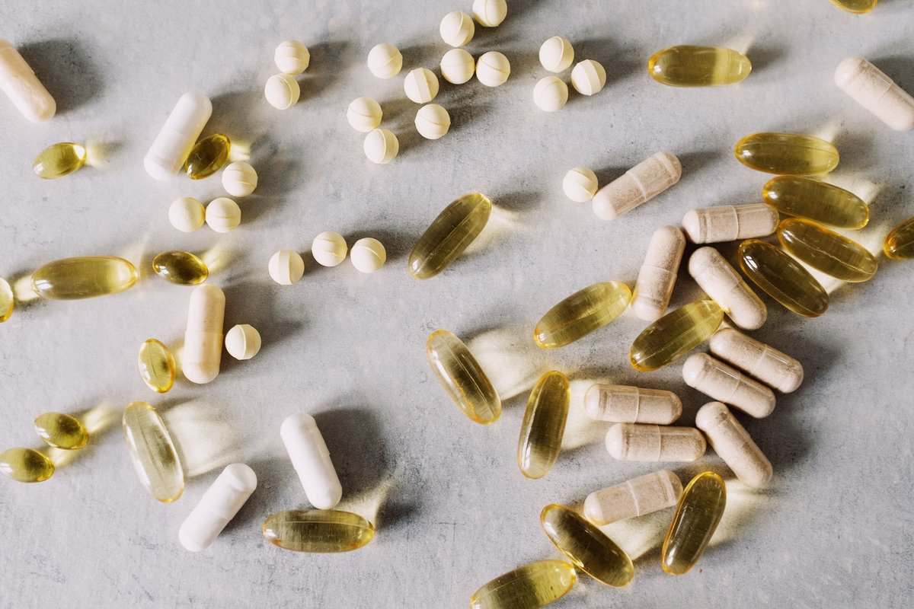
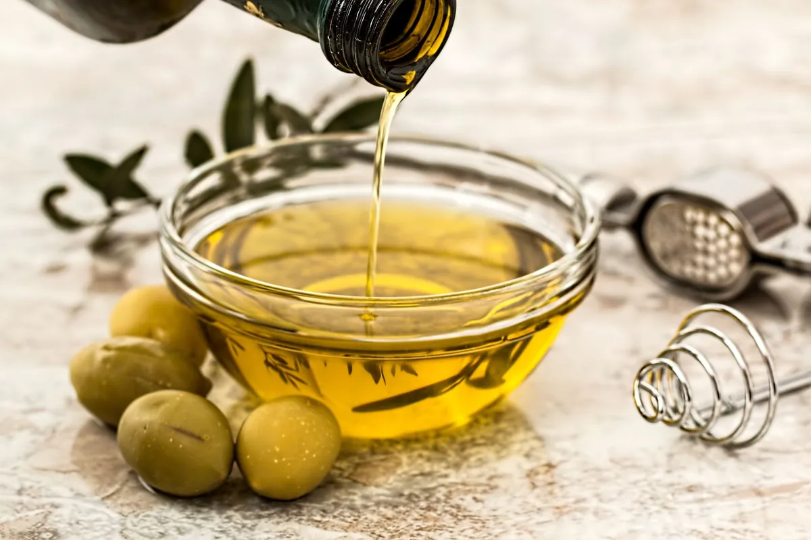

7 Ways to Simplify Anti-Inflammatory Foods Today

Key takeaways
- I used to think eating healthy meant spending three hours chopping organic kale and spending half my paycheck at fancy grocery stores.
- My joints hurt, my skin was breaking out, and I was perpetually exhausted while trying to follow impossible diet trends.
- Focus on: 1. Upgrade Your Cooking Fats.
I used to think eating healthy meant spending three hours chopping organic kale and spending half my paycheck at fancy grocery stores. My joints hurt, my skin was breaking out, and I was perpetually exhausted while trying to follow impossible diet trends. Everything changed when I realized that adopting Anti-Inflammatory Foods isn't about perfection; it is about simple, consistent swaps that bring antioxidants and healthy fats into your everyday meals.
To start healing your body, you don't need a total pantry overhaul. You just need a few foundational changes that stick over time.
1. Upgrade Your Cooking Fats
Swap out refined seed oils for extra virgin olive oil or avocado oil. These rich sources of monounsaturated fats actively fight oxidative stress in your cells. Check out our related healthy tip on choosing kitchen staples.
2. Embrace Deeply Pigmented Berries
Blackberries, wild blueberries, and raspberries are loaded with anthocyanins. These potent antioxidants neutralize free radicals before they trigger inflammatory cascades.
3. Focus on Omega-3 Fatty Acids
Wild-caught sardines, salmon, and walnuts provide EPA and DHA. These fatty acids help cool down joint discomfort and support heart health. Read another another practical guide to building balanced plates.
4. Spice Up Your Meals with Turmeric and Ginger
Curcumin in turmeric and gingerol in fresh ginger are powerful natural compounds. Pair turmeric with black pepper to boost its absorption by up to 2,000 percent.
The 2-Minute Win
Drizzle a tablespoon of extra virgin olive oil and a dash of black pepper over canned wild salmon for an instant anti-inflammatory lunch.
5. Prioritize Dark Leafy Greens
Lacinato kale, Swiss chard, and spinach pack vitamins A, C, and K. They offer a cellular defense shield without needing complex preparation.
6. Swap Drinks for Green Tea
Matcha and green tea contain EGCG, a catechol antioxidant studied for its cell-protective properties. Discover a similar wellness insight on healthy morning routines.
Prioritize small, additive habits over strict elimination. Adding a handful of walnuts daily beats going on an extreme detox every single time.
7. Protect Your Sleep to Lower Inflammation
Diet is only half the battle; poor sleep spike cortisol and inflammation markers instantly. I started using a reliable White Noise Machine to block out ambient sound and guarantee restorative sleep, giving my body time to repair built-up stress. You can stay consistent with this habit easily by standardizing your nighttime setup.
Taking control of your health shouldn't feel like a full-time job. As you explore more anti-inflammatory guides, remember that consistency matters far more than intensity.
Educational only — not medical advice.
Disclosure: This page may contain affiliate links.
Recommended Reading
- What Nobody Tells You About Scientists Discover Surprising Heart Benefits Of Eating Avocado And Mango Every Day
- Morning Routines for Energy & Focus: Boost Your Day Even If You're Not a Morning Person
- Is Your Toddler Eating Ultra-Processed Foods? The Shocking Truth About Toddler Meals
More in anti-inflammatory

anti-inflammatoryA Simple Daily Fiber Supplement Reduced Arthritis Pain And Improved Strength
Discover how a simple daily fiber supplement reduced arthritis pain and improved strength. Learn science-backed gut heal
Read article →
anti-inflammatoryCan Extra Virgin Olive Oil Fight Cancer and Viruses? Experts Say Yes
Discover how Extra Virgin Olive Oil, the immune-boosting supplement that fights cancer & viruses, can significantly enha
Read article →